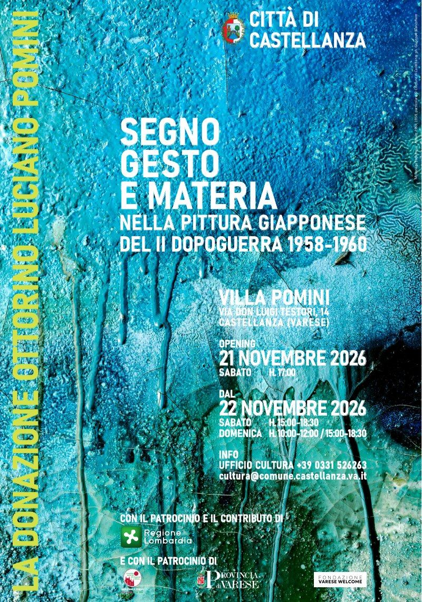

La donazione Ottorino Luciano Pomini
Segno
gesto
e materia
nella pittura giapponese
del II dopoguerra 1958-1960
Inaugurazione sabato 21 novembre 2026, ore 17
Villa Pomini, via don Luigi Testori 14, Castellanza

© Comune di Castellanza, ph. Giuseppe Biancofiore
Citazione da sostituireL'assessore invia una nuova frase di Pomini: quella attuale riguarda i quadri d'oltre cortina. Finché non arriva la fascia resta nascosta nella versione pubblica.
«Ho voluto lasciare alla pubblica ammirazione una testimonianza sincera e fedele dei principali problemi esistenziali che hanno caratterizzato il travagliato periodo dell'ultimo dopoguerra».
La mostra
Otto dipinti di sei grandi artisti giapponesi del secondo dopoguerra tornano a Villa Pomini dopo il restauro conservativo. Fanno parte della donazione che l'industriale e collezionista Ottorino Luciano Pomini (1921-1987) fece al Comune di Castellanza nel 1983 e trovano ora posto in un allestimento permanente, pensato per valorizzarli nel luogo in cui il collezionista li aveva custoditi.
Gli autori sono Imai Toshimitsu (1928-2002), Motonaga Sadamasa (1922-2011), Kuno Shin (1921-1998), Kawabata Minoru (1911-2001), Abe Nobuya (1913-1971) e Dōmoto Inshō (1891-1975). Pomini intercettò le loro opere attraverso i principali circuiti artistici del Nord Italia proprio negli anni in cui questi pittori si affermavano in Occidente, e ne nacque una precoce campionatura della pluralità dell'arte giapponese di quel periodo.
Per la prima volta il pubblico può vedere questi quadri riuniti. La mostra restituisce alla comunità e al territorio un patrimonio artistico di caratura internazionale, non comune nelle collezioni pubbliche italiane, e riaccende i riflettori su un collezionista lombardo che merita di essere riscoperto.
- Esposizione permanente
promossa da - Città di Castellanza
- Curatela, catalogo
e apparati didattici - Davide Tarlazzi
Giulia Briguori - Progetto espositivo,
progetto grafico
e progetto illuminotecnico - Gianni Fiore
- Allestimento
- Gobbo AllestimentiLegnano (MI)
- Restauri
- Studio di restauro di Isabella PirolaVanzaghello (MI)
- Audioracconto
- Loquis
- Catalogo
- Nomos Edizioni
Il collezionista
Introduzione (da fornire, 3-4 righe)Chi era Ottorino Luciano Pomini in poche righe: è la parte sempre visibile.
Racconto completo (da fornire)La storia e il personaggio: la famiglia, l'attività industriale, la passione per l'arte e il collezionismo, il legame con Castellanza, la donazione al Comune. Può essere lungo: si legge aprendo «Continua a leggere».
Fotografia (se disponibile)Un ritratto del collezionista, con il credito fotografico e il permesso di pubblicarlo online.
Le opere
Da fornireUna breve introduzione alle opere esposte; per ogni opera la fotografia in alta risoluzione, con credito fotografico e permesso di pubblicazione online, e la didascalia completa: autore, titolo, anno, tecnica, misure.
Tecnica, misure
Tecnica, misure
Tecnica, misure
Tecnica, misure
Tecnica, misure
Tecnica, misure
Il restauro
Prima di tornare alle pareti, le opere sono state restaurate dallo Studio di restauro di Isabella Pirola, sotto la sorveglianza della Soprintendenza. L'allestimento è curato dall'architetto Gianni Fiore.
La mostra è accompagnata da una pubblicazione divulgativa che inquadra il contesto storico-artistico, le singole opere e la figura del collezionista.
Da fornire (facoltativo)Testo da verificare con lo Studio Pirola; eventuali fotografie del restauro, prima e dopo, con crediti.
I video
Da ascoltare
Sedici podcast geolocalizzati e multilingue, realizzati con la piattaforma Loquis, accompagnano la visita: la storia della villa, la figura di Ottorino Luciano Pomini, il movimento Gutai e le singole opere esposte. Si ascoltano gratuitamente dall'app o inquadrando i QR code in villa.
Il formato audio è pensato anche per allargare la fruizione a un pubblico più ampio, comprese le persone con disabilità visive.
in arrivo
Da fornireIl link ai podcast su Loquis e il QR code. Quando saranno disponibili?
La villa
Costruita nel 1919 e intitolata al primo proprietario, Ottorino Pomini, la villa appartiene al tardo Eclettismo: mattoni a vista, bifore, loggiati, decorazioni a graffito e, a coronare l'edificio, la torretta interamente finestrata da cui si domina il panorama. Intorno, un parco di circa 5.300 metri quadrati.
Nel 1982 Luciano Pomini propose al Comune di Castellanza la cessione della villa perché diventasse un centro culturale aperto a tutti i cittadini. Oggi ospita mostre, programmi di formazione e la biblioteca donata dalla famiglia Pomini.
Da verificareNelle fonti compaiono Ottorino Pomini (primo proprietario, 1919), Luciano Pomini (cessione al Comune, 1982) e Ottorino Luciano Pomini (il collezionista). Sono persone diverse o la stessa? Il testo va corretto di conseguenza.
Da fornireFotografie della villa e degli spazi della mostra, con crediti.
Lo sguardo degli studenti
Tre classi del Liceo Artistico Statale Paolo Candiani di Busto Arsizio hanno studiato la storia della villa e del suo giardino nei percorsi di Formazione Scuola-Lavoro, coordinate dalla professoressa Anna Fumagalli. Il loro lavoro è diventato una mostra di pannelli e modelli tridimensionali, aperta al pubblico con visite guidate.
Da fornireDate e modalità delle visite alla mostra degli studenti; eventuali fotografie dei pannelli e dei modelli.
Gli eventi
-
Studiare restaurare ed esporre
La valorizzazione dei quadri giapponesi di Villa Pomini
Con Davide Tarlazzi, curatore del progetto; Isabella Pirola, restauratrice; Gianni Fiore, exhibition designer
-
Il tramonto del mondo fluttuante è a Occidente
Con Paolo Linetti, direttore del Museo d'Arte Orientale «Mazzocchi» di Coccaglio (Brescia)
Dal 5 dicembre: Villa Pomini tra storia e innovazione
-
Presentazione della ricerca e dei progetti
Con le classi 4ª A-AS-D e i docenti del Liceo Artistico «P. Candiani» di Busto Arsizio
-
Visite guidate dagli studenti
Gli incontri si tengono a Villa Pomini, via don Luigi Testori 14, Castellanza.
La visita
- Dove
- Villa Pomini, via don Luigi Testori 14, 21053 Castellanza (VA)
Apri in Google Maps - Inaugurazione
- Sabato 21 novembre 2026, ore 17
- Aperture
- Dal 22 novembre 2026 al 10 gennaio 2027
sabato dalle 15 alle 18.30
domenica dalle 10 alle 12 e dalle 15 alle 18.30 - Aperture straordinarie
- Martedì 8 dicembre 2026, dalle 15 alle 18.30
Mercoledì 6 gennaio 2027, dalle 15 alle 18.30
Chiuso sabato 26 dicembre 2026 - Ingresso
- Gratuito
- Visite guidate
- Attraverso podcast dedicati
- Accesso
- La mostra permanente è ospitata al piano terra di Villa Pomini. Vi si accede tramite una breve scalinata; per le persone con disabilità è disponibile un montascale.
- Informazioni
- Ufficio Cultura del Comune di Castellanza
tel. 0331 526263
cultura@comune.castellanza.va.it - Ufficio stampa
- Stefano Morelli
ufficiostampa@comune.castellanza.va.it
Diario della mostra
- Inaugurazione della mostra a Villa Pomini.
- Il video dell'allestimento, raccontato dall'assessore alla Cultura.
- L'invito alla città.
Crediti
- Progetto
- Villa Pomini Lab. Patrimonio, comunità, giovani e storytelling
- Promosso da
- Comune di Castellanza
- Con il patrocinio e il contributo di
- Regione Lombardia, Avviso Unico Cultura, Ambito A
- Con il patrocinio di
- Provincia di Varese, Fondazione Varese Welcome [terzo ente da verificare]
- Restauro
- Studio di restauro Isabella Pirola, sotto la sorveglianza della Soprintendenza
- Allestimento
- Arch. Gianni Fiore
- Podcast
- Loquis, piattaforma sviluppata da GeoRadio S.r.l.
- Mostra didattica
- Liceo Artistico Statale Paolo Candiani, Busto Arsizio
- Curatela
- [da indicare: chi ha curato la mostra e i testi]